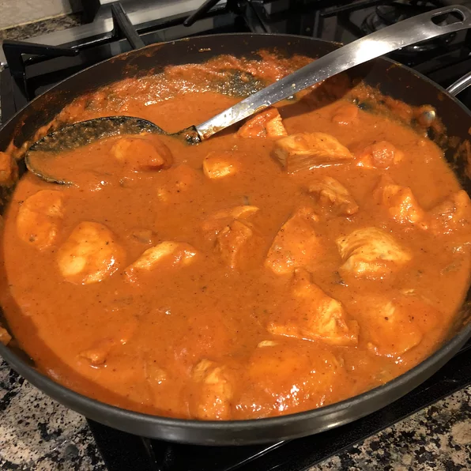

Chicken Masala

Chicken Tikka Masala, your favorite Indian dish
- 1 14.5oz can chopped tomatoes
- 4 tablespoons plain yogurt
- 2 cloves garlic
- 1 piece ginger
- 2 tbsp olive oil
- 1 onion
- 2 tbsp masala curry paste
- 4 chicken breasts
- salt and pepper
- 1/4 cup water
- 1 tbsp flour
- 3 tbsp chopped cilantro
Recipe Instructions
- In a large bowl, combine yogurt, lemon juice, 2 teaspoons cumin, cinnamon, cayenne, black pepper, ginger, and salt. Stir in chicken, cover, and refrigerate for 1 hour
- Preheat grill for high heat
- Lightly oil the grill grate. Thread chicken onto skewers, and discard marinade. Grill until juices run clear, about 5 minutes on each side.
- Melt butter in a large heavy skillet over medium heat. Saute garlic and jalapeno for 1 minute. Season with 2 teaspoons cumin, paprika, and 1 teaspoon salt. Stir in tomato sauce and cream. Simmer on low heat until sauce thickens, about 20 minutes. Add grilled chicken, and simmer for 10 minutes. Transfer to a serving platter, and garnish with fresh cilantro.